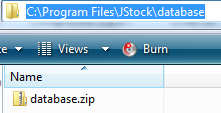
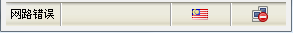

中文
中文 English
English常见问题
我如何能够对 JStock 做出贡献？
- 对 JStock 说爱您！
- 加入 JStock 面子书和其他爱好者交流！
- 观察，星星及叉源代码 https://github.com/yccheok/jstock。
- 访问我们的开发板以了解 JStock 最新的发展。
- 捐款。

- 我们爱死在 Google Play 商店 的五星评价。
- 尝试及升级 JStock Android 到高级功能。

JStock - 免费股市软件及 JStock Android 有何差别？
- JStock - 免费股市软件 执行在 Windows, Linux 及 OSX。
- JStock Android 执行在 Android。
- JStock - 免费股市软件 是免费且开源的。
- JStock Android 是商业应用。特定动能是免费的。之后，用户能自行决定要不要升级到高级功能。她是封闭源代码的。
我得到“网路错误”。
当 JStock 启动，她会进行两件事项。
- 在她相对安装文件夹寻找 database\database.zip。
 - 解压缩 database\database.zip 去 C:\Users\{Your Name}\.jstock\1.0.6，或 C:\Documents and Settings\{Your Name}\.jstock\1.0.6 如果您是用着 XP。


JStock 可有键盘快捷键？
- Ctrl+R : 刷新股价。要了解刷新股价的重要性，请参阅JStock 占用太多的网络带宽！。
- Ctrl+W : 切换股票观察表。
- Ctrl+P : 切换投资组合。
你会盗用我的个人资料吗？
绝不！请参阅隐私信息.
JStock 是否用合法的方式取得股票资料?
是的。JStock 使用合法的方式取得股票资料。她使用 Yahoo! 所提供的方法来读取资料。请参阅 Yahoo! 客户支持所回复的电邮。JStock 使用以下方式向 Yahoo! 服务器读取资料 - http://download.finance.yahoo.com/d/quotes.csv?s=YHOO&f=sl1d1t1c1ohgv&e=.csv
如何能够获得客户支援？
要得到客户支援，最理想的方法是通过 JStock 面子书。
JStock 能有这个新功能吗？
我们非常高兴您能告诉我们您想要的新功能。这将有助于我们改善 JStock。您可通过 JStock 面子书键入您想要的新功能。
如果您想要的新功能在开发板，欢迎投票。这样，我们就能知道大多数的用户想要什么。不过，我们不会立即开发新功能。这取决于我们的开发资源。
我在 JStock 里发现了问题/错误/臭虫。
我们非常高兴您能告诉我们问题所在。这将有助于我们改善 JStock。您可通过 JStock 面子书键入您发现的问题。
如果您想要的修正臭虫在开发板，欢迎投票。这样，我们就能知道大多数的用户想要什么。不过，我们不会立即修正臭虫。这取决于我们的开发资源。
JStock 为何不能在我的 Mac 计算机上操作？
您需要 Java 7。
在那里可以下载 JStock 的源代码？
https://github.com/yccheok/jstock。
谁是在为 JStock 默默耕耘的人？
- Yan Cheng Cheok，程序员，项目管理员。
- The IconBlock Ltd，平面设计师。
- Shuwn Yuan Tee，程序员，网页设计师。
- Stefan Angrick，德文翻译员，英语翻译员。
- Maurizio Da Lio, 意大利文翻译员。
- http://www.klse.info, 马来西亚股市历史数据赞助商。
- Peter Gransdorfer，代码贡献者。
- Nanne Baars，代码贡献者。
- Mark DeSpain，代码贡献者。
- Carlo de Wolf，代码贡献者。
- bbuelte，代码贡献者。
- Vetsper Felix，代码贡献者。
- Peter Kane，代码贡献者。
- Dennis Lee，代码贡献者。
- Randall Sell，代码贡献者。
- Karl Heinz Putz，提供 Mac package
- Parth Khare，预建的指标及教材贡献者。
JStock 当下的发展工作。
您可访问我们的开发板以了解 JStock 最新的发展。您也可访问部落格 http://yccheok.blogspot.com/。